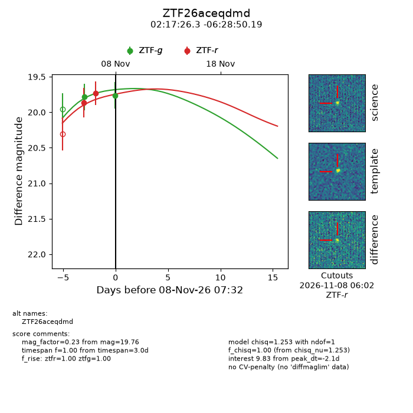
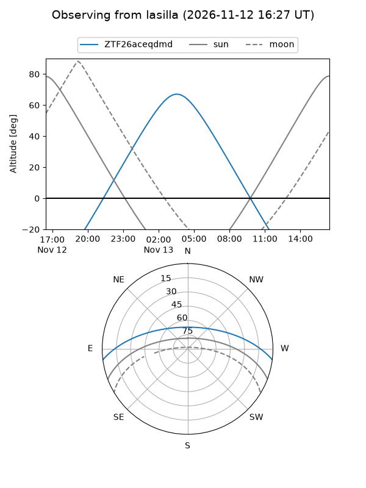
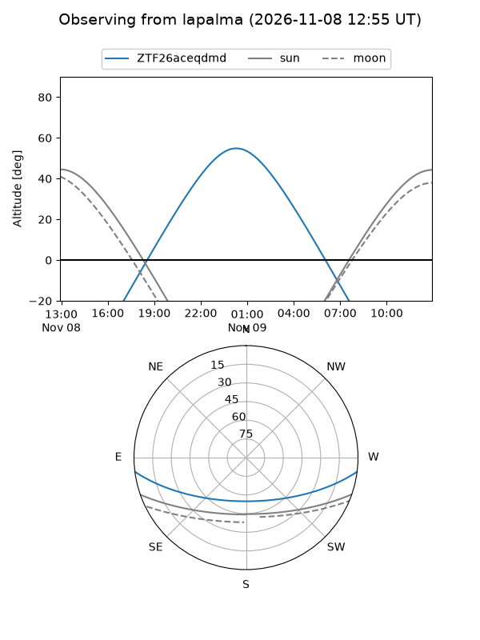
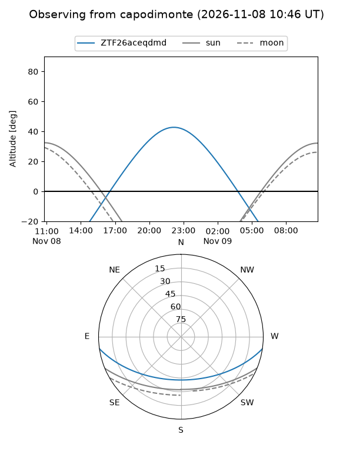
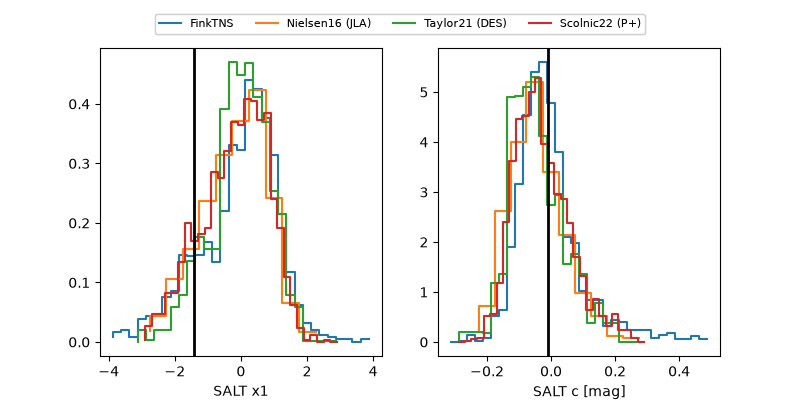

ZTF26aceqdmd
Target ZTF26aceqdmd at 2026-11-08 07:34
Aliases and brokers:
FINK-ZTF: ztf.fink-portal.org/ZTF26aceqdmd
Lasair-ZTF: lasair-ztf.lsst.ac.uk/objects/ZTF26aceqdmd
ALeRCE-ZTF: alerce.online/object/ZTF26aceqdmd
Direct TNS query: direct search
alt names
ZTF26aceqdmd (ztf,fink_ztf)
Coordinates:
equatorial (ra, dec) = 34.3596,-6.48061
equatorial (HMS+DMS) = 02:17:26.31,-06:28:50.19
galactic (l, b) = (171.5282,-60.95446)
Flags:
peak dt: -2.1
Photometry:
last ztfg=19.76, ztfr=19.73
2 ztfg, 2 ztfr detections
Lightcurve

Visibility



Additional plots
